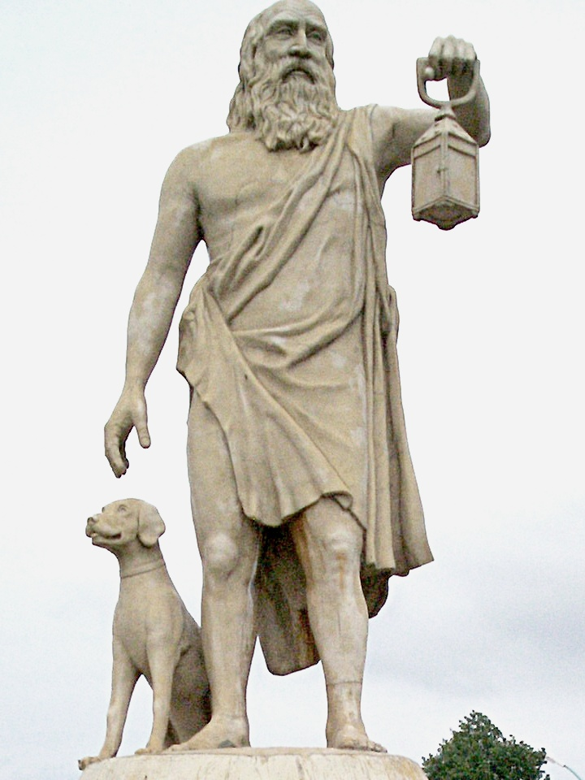

Diyojen
Diyojen Kimdir ?
MÖ 412 - MÖ 323 yılları arasında yaşamış Kinik felsefesinin öncüsü ünlü filozoftur.Diyojen, MÖ 412 yılında Sinop’da doğmuştur. Sinoplu Diogenes(Diyojen) diye ün yapan bu Kinik filozof, asıl mesleği kuyumculuk olan ve parayı çok sevdiği için kalp para basan bir kalpazanın oğludur. Babası Hicesias kalp para bastığı için Sinop'tan sürülmüş, baba oğul Atina'ya gelip yerleşmişlerdir. Çocukluğu Sivas’da geçmiştir.Kendinerine dayanan Kinik yaşam biçiminin öncülerinden çileci düşünürdür.Atina'ya yerleşen Diyojen umduğunu bulamamış, sürgün geldikleri için babası ile birlikte çok sıkıntı çekmiş, sefalet içinde yaşamıştır. Atina'da tanıştığı Sinizmöğretisinin kurucusu Antisthenes kendi felsefe ve öğretisini Dijoyen'e öğretmiştir. Diyojen, dostsuz, arkadaşsız ve himayesiz kalınca, farelere imrenecek kadar yokluklar içinde kalmış, bir gün yiyecek bulmak için koşturan bir fareyi görünce: " Hele bak bu hayvan Atinalıların mutfağına girmeyi biliyor da ben onların sofralarına oturamamak talihsizliğindeyim" diye bağırmıştır. Ve o andan itibaren hayvanların yaşamını doğaya daha uygun bularak onların yaşamına özenmiştir. Bu arada Antisthenes'in doğaya uygun yaşama çağrısını işitmiş ve ona koşmuştur. Bu inatçı adamın inadı ve ısrarına dayanamayan Antisthenes yeminini bozmuş ve yeniden öğretmenliğe başlayarak Diyojen'i yetiştirmiştir.Özel hayatında fakirlikten başka bir şey olmayan Diyojen, herkes tarafından itilmiş, hakarete uğramış, sefaletin her çeşidini yaşamıştır. Çok zaman kirli ve pis elbisesi ile ayrıca köpek derisine benzeyen mantosu ile dolaşır, geceleri heykel diplerinde ve sokak köşelerinde yatardı. Bir keşkülü (eskiden dervişlerin ve dilencilerin kullandıkları hindistan cevizi kabuğu veya abanozdan yapılmış kab, dilenci kabı), bir fıçısı ve bir sopası vardı.Fıçının içinde yaşaması herkesi şaşırtıyor, kendisine sual soranlara da köpek olduğunu söylüyordu. Fıçısından başka bir de çanağı vardı, başka eşya kullanmıyordu. Fakat bir gün bir çeşme başında avucu ile su içen bir çocuğu görünce, elindeki çanağı kırıp attı ve "Bu çocuk bana fazladan eşyam olduğunu öğretti" diye söylene söylene uzaklaştı. Diyojen aşırı gururlu bir insandı ve herkesi küçümserdi. (!) Sıradan insanlardan nefret eder ve hepsini o derece küçük görürdü ki, bir öğle vakti elinde fener "bir adam arıyorum" diye bağırarak Atina sokaklarında dolaşmış, böylece Atina'da adam görmediğini anlatmak istemiş. Her şeye rağmen Atina'da sayılan bir insandı, krallar bile onun ilmine, zekasına ve kişiliğine hürmet ederlerdi. Corinth'e gelen Büyük İskender, Diyojen'i ziyaret etti ve bir dileği olup olmadığını sordu. O ise bu soruya "Evet var, gölge etme başka ihsan istemem." yanıtını verdi.
Diyojen Felsefi Görüşü Nedir ?
Diyojen’e göre beden disiplini jimnastikle elde edilebilirdi. Ruh ise ancak erdem ile gelişebilirdi. Erdemin ne olduğunu araştırmış onun doğaya uygun yaşamak olduğunu bulmuştu. Yani bir insanin erdemli olabilmesi için doğaya uygun yaşaması gerekmekte idi. Bu ise olabildiğince arzu ve ihtiyaçları azaltmak, hatta kaldırmaktan ibarettir. Bu nedenle refah, nezaket, güzel sanatlar ve bilim cezalanmaları gereken fazlalıklardır; zenginlik, asalet, onur iğrenilecek şeylerdir. Din ve kanunlar politikanın icatlarıdır. Evlenme, mülkiyet kaldırılması gereken fazlalıklardır. Zira doğa hükümetinde her şey ortaklaşadır. Servet, kadınlar, çocuklar, hepside öyleliktir.Diyojen'in savunduğu yaşam tarzının ilk ilkesi kendine yetme, yani kişinin, mutluluk ilkesidir. İkinci ilke olan 'utanmazlık', kendi başına zararsız olan bazı eylemlerin hiçbir şekilde yapılamayacağını öne süren uzlaşımları umursamamak anlamına gelir. Bu ilkeden yola çıkarak yerleşik davranış kalıplarına uymadığı için, kendi açısından sade ve doğal, toplumsal değerler açısındansa sefil denebilecek bir yaşam sürdüğü için, Diyojen'e kinik denmiştir.